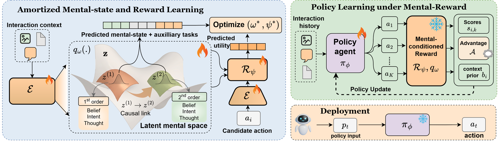
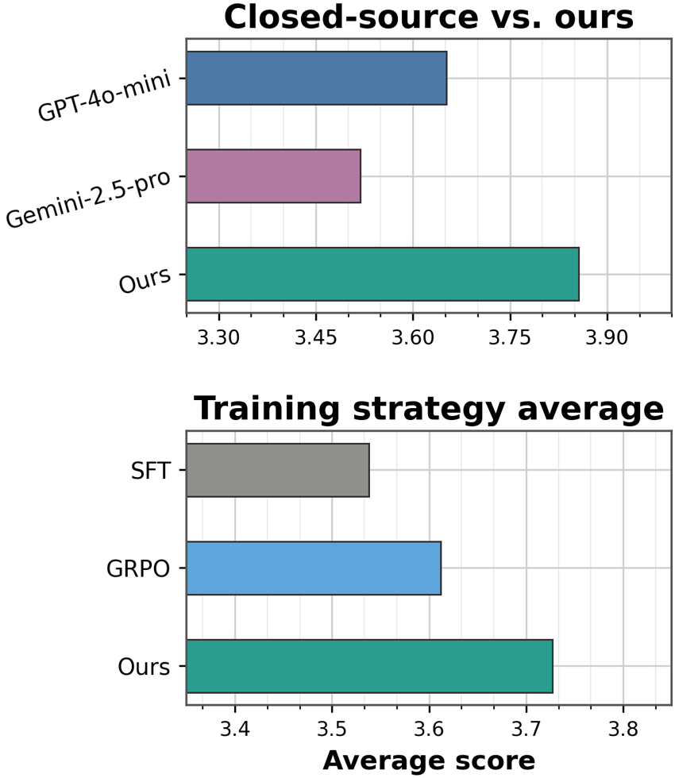

Infer
Estimate a partner’s beliefs, intent, task-relevant thoughts, and uncertainty.
Agents that explicitly model what others believe, intend, and expect can make better decisions under partial observability—without adding an extra inference pass at deployment.
University of California, San Diego
01 · Motivation
Multi-agent interaction is partially observable. A dialogue reveals actions and language, but not the other agent’s goals, knowledge, constraints, or expectations. Policies trained only on surface behavior can therefore choose plausible responses that are strategically or socially wrong.
We introduce mental-model-enabled agents, a framework that learns a latent model of a counterpart from interaction history and uses it as a reusable decision variable. The model represents first- and second-order mental states and is trained jointly with a belief-conditioned reward model. This signal then guides policy optimization, while the final policy acts independently at inference time. Across language-only and multimodal benchmarks, explicit mental-state modeling improves interaction quality and Theory-of-Mind performance over base agents.
Estimate a partner’s beliefs, intent, task-relevant thoughts, and uncertainty.
Represent what the partner believes about the acting agent and the shared state.
Use the inferred state to prefer actions that satisfy task and social constraints.
02 · Method
The mental-state encoder and reward model are coupled so that the latent is both interpretable and useful for evaluating candidate actions.

Infer first- and second-order mental states from the observed interaction history.
Use the frozen mental-conditioned reward model to guide policy optimization.
No teacher, mental-state encoder, or reward model is required at test time.
03 · Results
We test open-ended social interaction, controlled belief tracking, and multimodal role-playing with the same mental-model learning principle.
Qwen2.5-7B, averaged across two partner settings.
Average improvement across the six reported TB∧FB settings.
Overall score versus 0.981 for MMRole-Agent.
Zero-shot BigToM transfer with the official scorer.

SOTOPIA-All · GPT-4o-mini partner
Mental-model guidance improves the overall score for LLaMA, Mistral, and Qwen, with the largest gain on Qwen2.5-7B.
| Backbone | Base | Ours | Gain |
|---|---|---|---|
| LLaMA2-7B | 3.330 | 3.541 | +0.211 |
| Mistral-7B | 3.511 | 3.784 | +0.273 |
| Qwen2.5-7B | 3.290 | 3.856 | +0.566 |
Paired true-belief and false-belief accuracy
TB∧FB gives credit only when both branches of the same scenario are correct. Our model improves paired consistency across forward belief, forward action, and backward belief tasks.
| Task | Model | TB∧FB accuracy | |
|---|---|---|---|
| Without initial belief | With initial belief | ||
| Forward belief | Base | 77.0 | 48.0 |
| SFT | 84.5 | 92.0 | |
| Ours | 96.0 | 97.5 | |
| Forward action | Base | 63.5 | 67.5 |
| SFT | 76.5 | 73.0 | |
| Ours | 78.5 | 80.0 | |
| Backward belief | Base | 77.5 | 52.5 |
| SFT | 85.0 | 91.0 | |
| Ours | 95.5 | 98.5 | |
Official normalized multimodal role-play metrics
The strongest gains occur on coherence, response accuracy, personality consistency, knowledge consistency, and tone consistency—dimensions that require grounded character-state reasoning rather than fluent captioning alone.
| Split | MMRole-Agent | Ours | Gain |
|---|---|---|---|
| Overall | 0.994 | 1.023 | +0.029 |
| In-domain | 0.999 | 1.024 | +0.025 |
| Out-of-domain | 0.981 | 1.019 | +0.038 |
04 · Transfer
Transfer datasets are evaluation-only: no target labels are used for policy training.
Cross-domain negotiation retains high deal rates while reducing walkaways.
A different synthetic format tests whether nested belief structure is reusable.
Five thousand probes test transfer from dyadic training to multi-party reasoning.
05 · Analysis
SOTOPIA · Qwen2.5-7B
Even 25% supervision improves over the mental-free baseline; performance continues to rise with additional annotation coverage.
Annotation and posterior checks
The more expensive full-covariance posterior provides no measurable practical gain on the held-out BigToM split.
06 · Citation
The repository contains separate pipelines for every benchmark reported in the paper, plus reproducible transfer evaluators and pinned upstream sources.
Open the code repository@inproceedings{gani2026mentalmodels,
title = {Mental Models for Multi-Agent Systems},
author = {Gani, Hanan and Shao, Lulu and Chandraker, Manmohan},
booktitle = {Advances in Neural Information Processing Systems},
year = {2026}
}